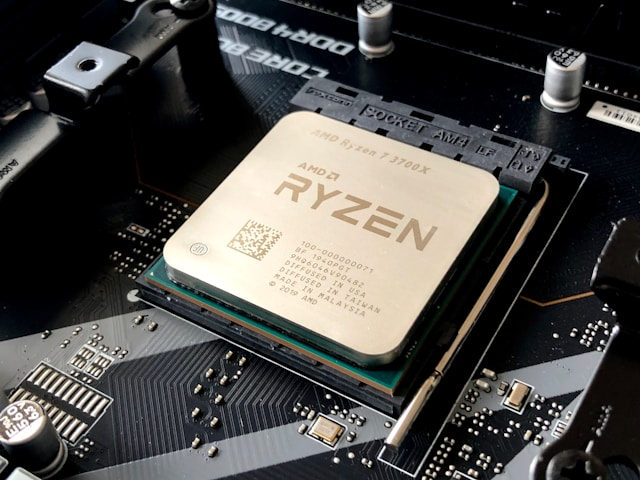

CPU (Unidad Central de Procesamiento)
La unidad central de procesamiento (conocida por las siglas CPU, del inglés Central Processing Unit) o procesador es un componente del hardware dentro de un ordenador, teléfonos inteligentes, y otros dispositivos programables. Su función es interpretar las instrucciones de un programa informático mediante la realización de las operaciones básicas aritméticas, lógicas, y externas (procedentes de la unidad de entrada/salida). Su diseño y su avance ha variado notablemente desde su creación, aumentando su eficiencia y potencia y reduciendo el consumo de energía y el coste.